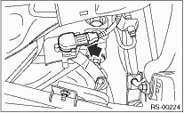
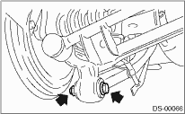
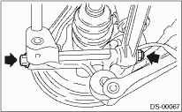
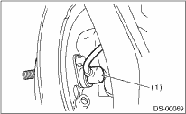

1. Disconnect the ground cable from the battery.
2. Lift up the vehicle, then remove the rear wheels.
3. Disconnect the connector from the rear vehicle height sensor. (HID model, right side only)

4. Remove the nuts that hold the lateral link and rear vehicle height sensor bracket. (HID model, right side only)

5. Remove bolt (A) and clip (B) fixing the rear vehicle height sensor bracket to the crossmember, then remove the rear vehicle height sensor assembly. (HID model, right side only)

6. Flatten the tab of the axle nut.

7. While applying the parking brake, remove the axle nut using a socket wrench.
CAUTION:
Remove the axle nut while there is no load being applied to the axle. Failure to do so may damage the wheel bearings.
8. Remove the rear stabilizer link.

9. Remove the bolts which secure the trailing link to the housing.

10. Remove the bolts which secure the front and rear lateral link to the housing.

11. Remove the rear ABS wheel speed sensor from the back plate.

|
(1) |
ABS wheel speed sensor |
12. Remove the rear drive shaft from the rear axle. If it is hard to remove, use ST1 and ST2 to remove the brake disc rotor.
| ST1 926470000 | AXLE SHAFT PULLER |
| ST2 28099PA110 | AXLE SHAFT PULLER PLATE |
CAUTION:
• Do not hammer the drive shaft when removing it.
• Do not let the oil seal or tone wheel be damaged.
13. Remove the rear drive shaft from the rear differential by using the ST.
| ST 28099PA100 | DRIVE SHAFT REMOVER |
CAUTION:
As shown in the figure, set the ST to the bolt (A) without damaging the side bearing retainer.

|
(A) |
Bolt |